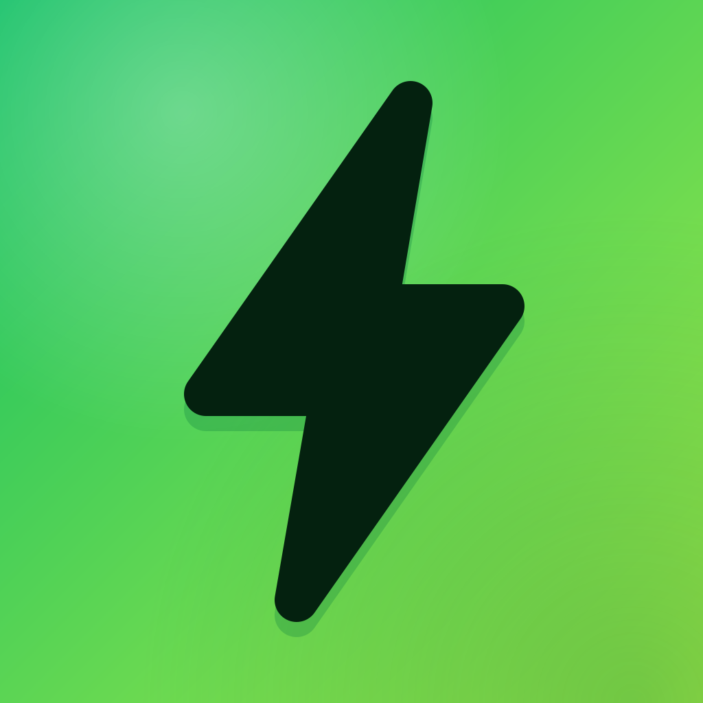

Welcome to Fuel
Your food log has its own app now. Bring it across from Overload, it takes a minute.
Bring my food log
Nothing is removed from Overload.

Your food log has its own app now. Bring it across from Overload, it takes a minute.
Nothing is removed from Overload.